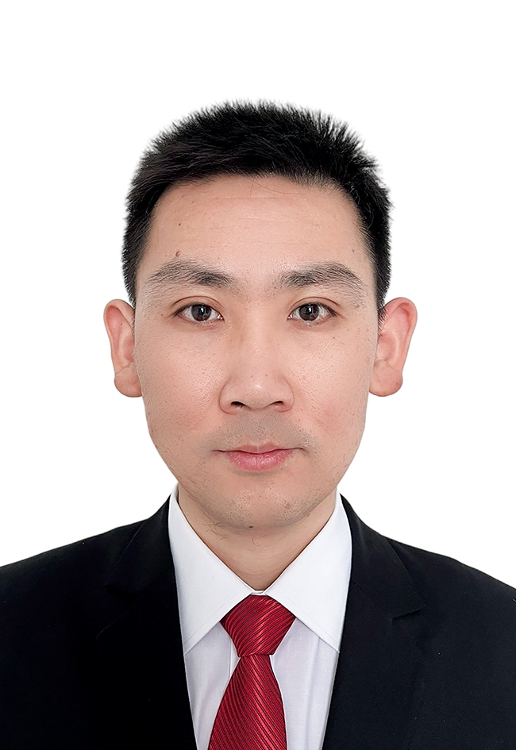

本人就职于中兴通讯有限公司，深耕网络技术领域共计5年，从业经历覆盖城域网、数据中心、云计算三大核心板块，技术功底扎实，实践经验丰富。其中，前2年专注于城域网全流程工作，深度参与网络设计、工程建设、业务割接、日常运维等各项工作，熟悉城域网组网架构、业务流转逻辑及故障应急处置，积累了深厚的基层网络运维与建设经验；后3年聚焦数据中心网络与云计算领域，主攻运维改造、架构设计、规模扩容等核心工作，全程牵头管理总容量达1600G的3个大型数据中心，统筹把控数据中心从架构搭建、设备部署到运维优化、业务扩容的全生命周期，具备大型数据中心全流程管控与技术攻坚能力。
本人精通网络二层(L2)、三层(L3)全栈技术，熟练掌握IaaS、NFV架构相关核心技术，可独立完成基础网络、存储业务网络的搭建、调试、运维与优化工作，保障底层网络稳定运行。熟练运用OpenStack各组件开展运维工作，尤其精通Neutron组件在计算、存储领域的深度应用，能够依托该组件实现网络资源灵活调度、虚拟网络精细化管控。日常工作中熟练运用各类高级网络技术，涵盖VXLAN隧道技术、EVPN技术、OpenFlow技术、Spine-Leaf网络架构、SDN控制器，以及Overlay-Underlay网络架构的配置、调试与深度优化，可快速解决复杂网络故障、优化网络传输效率，适配大型数据中心高并发、大流量、高稳定的运行需求。
在资源有限的情况下，承担部门多个有线产品项目的技术总监职责，包括固网GPON、DWDM以及机顶盒运维项目；协调各方资源，制定详尽的项目计划，有效控制项目进度与风险；成功处理众多网络故障和客户需求，确保网络稳定与高效运行；全面深入理解通信产品，加深对软件开发流程的掌握。
项目背景：在数字化转型浪潮中，BeeLine网络虚拟化项目面临业务量爆炸性增长、现有数据中心资源紧张的挑战，迫切需要大规模运维扩容，以支持更多业务上线，确保服务连续性与稳定性。
项目目标：领导团队完成DC3和DC2/DC1的运维扩容改造，优化网络架构，提升数据中心处理能力，确保项目按时按质完成，满足业务发展需求。
关键行动：
项目成果：成功完成DC3和DC2/DC1的运维扩容，提升网络稳定性和效率，支持更多业务顺利上线，显著提高客户满意度；充分展现战略规划、架构设计、项目管理和团队领导能力，实现技术与业务需求紧密结合，推动企业数字化转型。
个人贡献：发挥技术专长，展现领导力与协调能力，确保项目团队高效协作，推动项目顺利进行，实现项目目标，提升数据中心性能，为公司长期发展奠定坚实基础。
俄罗斯某州IPBH网络swap项目，涉及270个站点替换，运用MPLS-VPN技术实现一张城域网同时承载基站回传业务与政企服务。
俄罗斯布良斯克城域网swap异厂商设备项目，涉及260多个站点，运用MPLS-VPN技术完成项目落地。